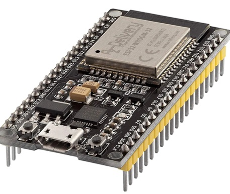

SEJA BEM-VINDO À SEMANA ZERO WYDEN 2026.1

Esta aula

O QUE É ESP 32

É um microcontrolador com Wi-Fi e Bluetooth incorporados, muito empregado em projetos de Internet das Coisas (IoT) e sistemas embarcados. Ele atua como um pequeno computador programável apto a se conectar à internet, dialogar com outros dispositivos e gerenciar componentes eletrônicos como sensores, LEDs, motores e relés. Bastante explorado em trabalhos acadêmicos, prototipagem e automação residencial, o ESP32 possibilita captar dados do ambiente, processá-los e remetê-los para a nuvem ou para aplicativos móveis. Por ser compacto, de baixo custo e versátil, virou uma das plataformas centrais para o desenvolvimento de soluções conectadas.
O ESP32 é largamente empregado como ponto de partida em projetos de IoT por agrupar, em um único microcontrolador, aptidão de processamento, conexão Wi-Fi e Bluetooth e diversos pinos de entrada e saída (GPIO). Ele possibilita ligar sensores e atuadores diretamente à placa, efetuar a captura dos dados reunidos, executar pequenos processamentos locais e transmitir essas informações para a internet. Tal método é denominado computação integrada, visto que o processamento ocorre no próprio aparelho. Ademais, o ESP32 pode funcionar tanto despachando dados periodicamente para a nuvem quanto atendendo a ordens recebidas à distância, viabilizando conceber sistemas de acompanhamento, gestão e automatização.
Ao progredir para os pilares da Internet das Coisas (IoT), percebe-se que o ESP32 é somente um componente do ecossistema. A IoT se fundamenta na união de quatro elementos centrais: aparelhos físicos (sensores e atuadores), comunicação (Wi-Fi, Bluetooth, LoRa, dentre outros), tratamento de informações e painel de exibição (aplicativos, painéis ou sistemas na web). O intuito primordial é converter dados do meio físico em informações digitais que possam originar resoluções automáticas ou apoiar a deliberação humana. Uma ilustração concreta é a vigilância da temperatura num local: o sensor capta os dados, o ESP32 remete a um servidor, e o sistema pode disparar notificações se a temperatura exceder um certo patamar.
Outro preceito relevante é a observação constante através de sensores. Sensores possibilitam medir grandezas contextuais como temperatura, humidade, claridade, presença, qualidade do ar ou pressão. Tais dados podem ser reunidos em tempo real e guardados para revisão pretérita, permitindo reconhecer esquemas e antecipar condutas futuras. Esta metodologia é vasta e utilizada em agricultura perspicaz, metrópoles inteligentes, bem-estar, indústria de ponta e automatização doméstica.
Finalmente, surge o processamento em nuvem, que completa a IoT ao providenciar estrutura para guardar, processar e examinar grandes volumes de dados. A nuvem possibilita que as informações transmitidas pelo ESP32 sejam alocadas em bases de dados, mostradas em telas interativas e alcançadas à distância através de aplicativos online ou móveis. Entre seus fundamentos estão a escalabilidade (aptidão de expandir conforme a procura), acesso constante (permissão de acesso perpétuo), proteção e articulação com outros esquemas. Assim, a justaposição entre ESP32, sensores, comunicação e nuvem constrói soluções perspicazes aptas a fiscalizar, analisar e tornar automáticos processos em diversos cenários.

DIAGRAMA ESP 32 - CLOUD
Prosseguindo, após entender a função do ESP32 como aparelho embarcado encarregado de congregar e remeter dados, é essencial uni-lo a um sistema de computação em nuvem, tal como o ThingSpeak, para que as informações possam ser guardadas, estruturadas e visualizadas de maneira prática. Os sistemas de nuvem IoT, como ThingSpeak, Firebase, AWS IoT, Azure IoT Hub e Blynk, possibilitam que aparelhos conectados remetam dados a servidores distantes através de padrões como HTTP ou MQTT. Tais plataformas fornecem funcionalidades como persistência em base de dados, elaboração de diagramas em tempo real, constituição de avisos e exame de dados precedentes. Assim, o microcontrolador cessa de ser somente um captador local e torna-se parte de um arranjo esperto ligado à rede. Para a exibição prática se empregará o ESP32, o captador DHT11 e o sistema ThingSpeak. O DHT11 é um sensor digital apto a calcular a temperatura e a umidade do meio. Ele envia esses dados ao ESP32, que executa a leitura e, por meio do elo Wi-Fi, transmite as informações a um canal criado no ThingSpeak. Na plataforma, os dados são arranjados em setores (Fields) e mostrados em forma de gráficos, possibilitando o acompanhamento instantâneo e o estudo do curso das variáveis com o passar do tempo. Este percurso ilustra a estrutura fundamental de um arranjo IoT: Nível de Sensoriamento: DHT11 reúne dados do meio. Nível de Processamento e Conexão: ESP32 processa e envia os dados via Wi-Fi. Nível de Nuvem ThingSpeak guarda, cataloga e produz diagramas.